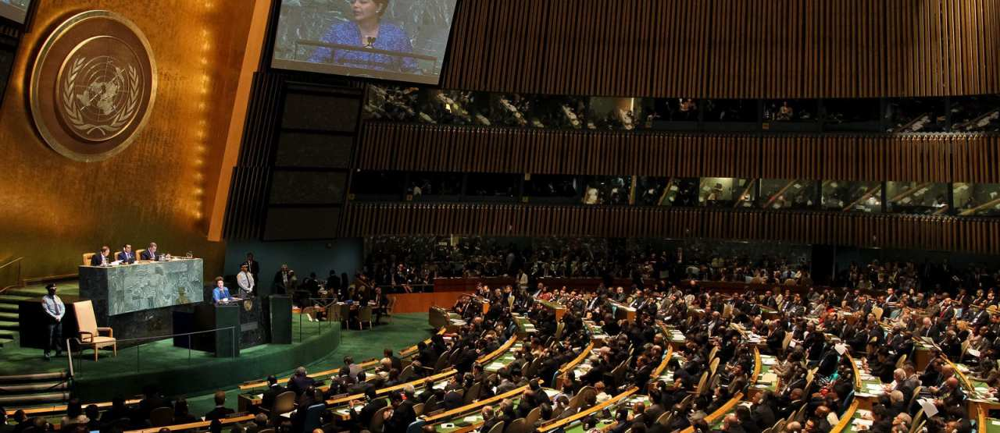

Cuidemos el Planeta


 1
1 5
5 6
6 8
8 10
10 12
12 13
13 14
14 15
15 16
16 17
17 18
18 19
19Cuidemos el Planeta


El 22 de abril de cada año se celebra el nacimiento del movimiento ambientalista moderno, el cual se inició en 1970 cuando 20 millones de norteamericanos tomaron las calles, los parques y los auditorios para manifestarse por un ambiente saludable y sustentable

El Día de la Tierra de 1970 logró una coincidencia política que parecía imposible. Ese día condujo a la creación de la Agencia de Protección al Medio Ambiente de Estados Unidos y a la aprobación de leyes relacionadas con el aire limpio, el agua limpia y la conservación de especies en peligro de extinción. A partir de entonces, cada año en esta fecha, el mundo entero reflexiona y se moviliza por una Tierra mejor.
Hasta este siglo pocos pensaron que los seres humanos, viviendo en una extensión de tierra aparentemente sin límites y con agua abundante, podrían causar daños irreparables al medio ambiente. Sin embargo hoy los gobiernos y la gente en general en todo el mundo luchan con la erosión costera, los derrames de petróleo y la contaminación del agua potable, en tanto que cuestiones como el crecimiento de la población, la deforestación, la lluvia ácida y la posibilidad de rápidos cambios climáticos significan decisiones difíciles para el futuro.

En 1975 un grupo internacional de estudio reunido en Belgrado, Yugoslavia, propuso un marco de referencia mundial para la educación ambiental, el cual se llamó la "Carta de Belgrado". Esta Carta afirma que la meta de la educación ambiental es hacer que la población mundial se preocupe por el medio ambiente y tenga el conocimiento y la dedicación que la capacite para buscar soluciones a los problemas actuales y prevenir problemas nuevos.

Las Naciones Unidas proclamaron el 22 de mayo como día Internacional de la Diversidad Biológica, fecha que es celebrada en Venezuela con un honroso décimo lugar en todo el planeta, con la mayor variedad de animales, plantas y ecosistemas.
Nuestro planeta alberga una cantidad de especies, tanto vegetales como animales, las cuales viven en múltiples hábitats naturales, que cuando se alteran o destruyen, ocasionan la perdida de biodiversidad.
El 19 de diciembre de 1994, la Asamblea General proclamó el 29 de diciembre, fecha de entrada en vigor del Convenio sobre la Diversidad Biológica, Día Internacional de la Diversidad Biológica (resolución 49/119). La Conferencia de las Partes en el Convenio, celebrada en Nassau en 1994, había recomendado la designación de ese Día. Posteriormente se cambió la fecha al 22 de mayo, como conmemoración de la firma de la Convención sobre Diversidad Biológica.

Se denomina contaminación ambiental a la presencia en el ambiente de cualquier agente (físico, químico o biológico) o bien de una combinación de varios agentes en lugares, formas y concentraciones tales que sean o puedan ser nocivos para la salud, la seguridad o para el bienestar de la población, o bien, que puedan ser perjudiciales para la vida vegetal o animal, o impidan el uso normal de las propiedades y lugares de recreación y goce de los mismos. La contaminación ambiental es también la incorporación a los cuerpos receptores de sustancias sólidas, liquidas o gaseosas, o mezclas de ellas, siempre que alteren desfavorablemente las condiciones naturales del mismo, o que puedan afectar la salud, la higiene o el bienestar del público.

Se considera recurso no renovable a un recurso natural que no puede ser producido, regenerado o reutilizado a una escala tal que pueda sostener su tasa de consumo. Estos recursos frecuentemente existen en cantidades fijas o son consumidos mucho más rápido de lo que la naturaleza puede recrearlos.


La biodiversidad o diversidad biológica se refiere a la extensa variedad de seres vivos existentes en el planeta, es también un sistema dinámico que está en evolución constante. Este término proviene de la contraccion inglesa “biological diversity”, y se le atribuye Walter G. Rosen el cual lo mencionó por primera vez en una conferencia en 1986.La distribución de la biodiversidad viene como consecuencia de factores evolutivos en el área biológica, geográfica y ecológica, por consiguiente cada especie posee un entorno adecuado a sus necesidades en donde cada uno de estos pueden relacionarse de manera armoniosa con el medio que lo rodea.
Entre los tipos de biodiversidad encontramos, la diversidad genética, la cual comprende la variación en los genes de una especie. Sucesivamente tenemos la diversidad de especie, la cual consiste en la cantidad de especies vivas que residen en un hábitat determinado. Luego está la diversidad ecológica, que es la variedad de ecosistemas o comunidades biológicas existentes en un área y el último tipo de biodiversidad es la diversidad funcional, es la variedad de respuesta de las especies a los cambios ambientales.


La Organización de las Naciones Unidas (ONU), o simplemente las Naciones Unidas (NN. UU.), es la mayor organización internacional existente. Se define como una asociación de gobierno global que facilita la cooperación en asuntos como el Derecho internacional, la paz y seguridad internacional, el desarrollo económico y social, los asuntos humanitarios y los derechos humanos.
La ONU fue fundada el 24 de octubre de 1945 en la ciudad estadounidense de San Francisco, por 51 países, al finalizar la Segunda Guerra Mundial, con la firma de la Carta de las Naciones Unidas.
Desde su sede en Nueva York, los Estados miembros de las Naciones Unidas y otros organismos vinculados deliberan y deciden acerca de temas significativos y administrativos en reuniones periódicas celebradas durante el año. La ONU está estructurada en diversos órganos, de los cuales los principales son: Asamblea General, Consejo de Seguridad, Consejo Económico y Social, Secretaría General, Consejo de Administración Fiduciaria y la Corte Internacional de Justicia. La sede europea (y segunda sede mundial) de la Organización de las Naciones Unidas se sitúa en Ginebra, Suiza.
La figura pública principal de la ONU es el Secretario General. El actual es António Guterres de Portugal, que asumió el puesto el 1 de enero de 2017, reemplazando a Ban Ki-moon.
La Conferencia de San Francisco (25 de abril-26 de junio de 1945) aprobó la Carta de la Organización de las Naciones Unidas, que fue firmada por cincuenta y un estados.
La Carta enunciaba los objetivos y principios en los que se basaba de la ONU.
Los propósitos eran cuatro:
mantenimiento de la paz y la seguridad internacionales;
fomentar entre las naciones relaciones de amistad;
realizar la cooperación internacional en la solución de problemas internacionales de carácter económico, social, cultural y humanitario, y en el desarrollo y estímulo del respeto a los derechos humanos y a las libertades fundamentales
servir de centro que armonice los esfuerzos de las naciones por alcanzar estos propósitos comunes.

Un recurso renovable es un recurso natural que se puede restaurar por procesos naturales a una velocidad superior a la del consumo por los seres humanos. La radiación solar, las mareas, el viento y la energía hidroeléctrica son recursos perpetuos que no corren peligro de agotarse a largo plazo.


 3
3 4
4 2
2